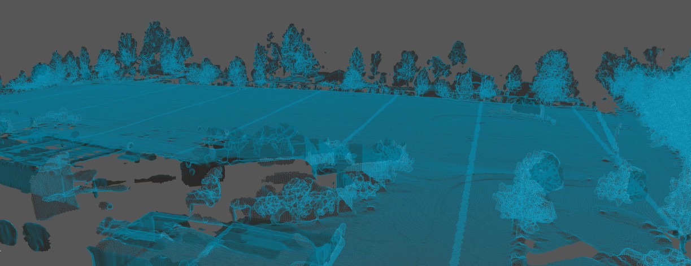
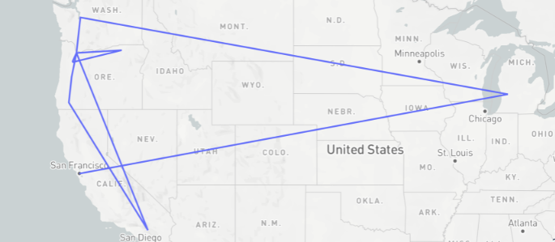
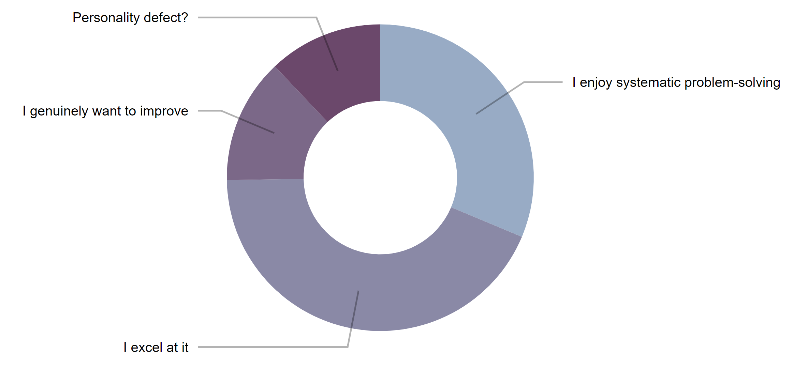
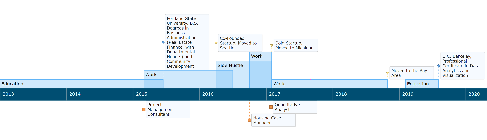
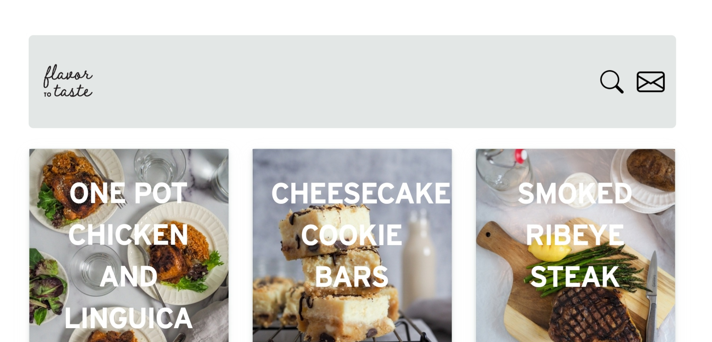
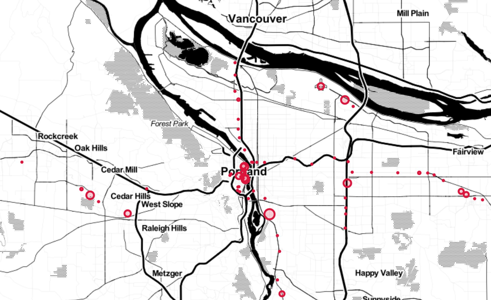
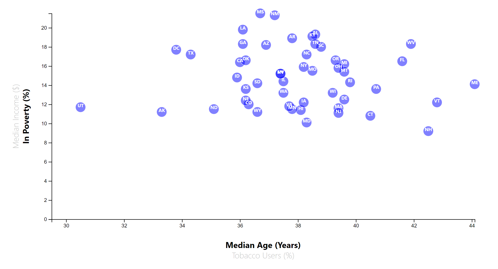
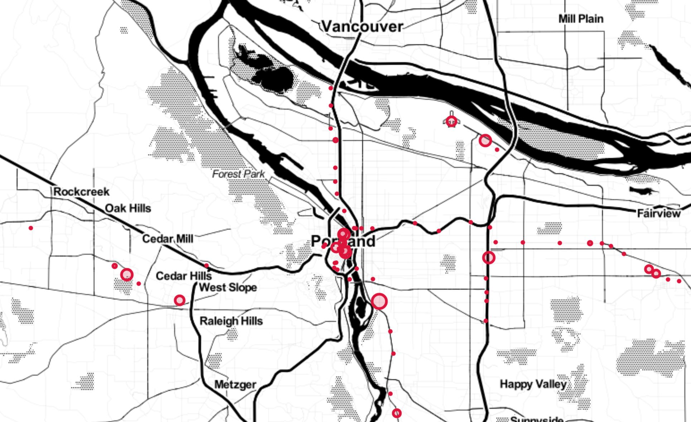
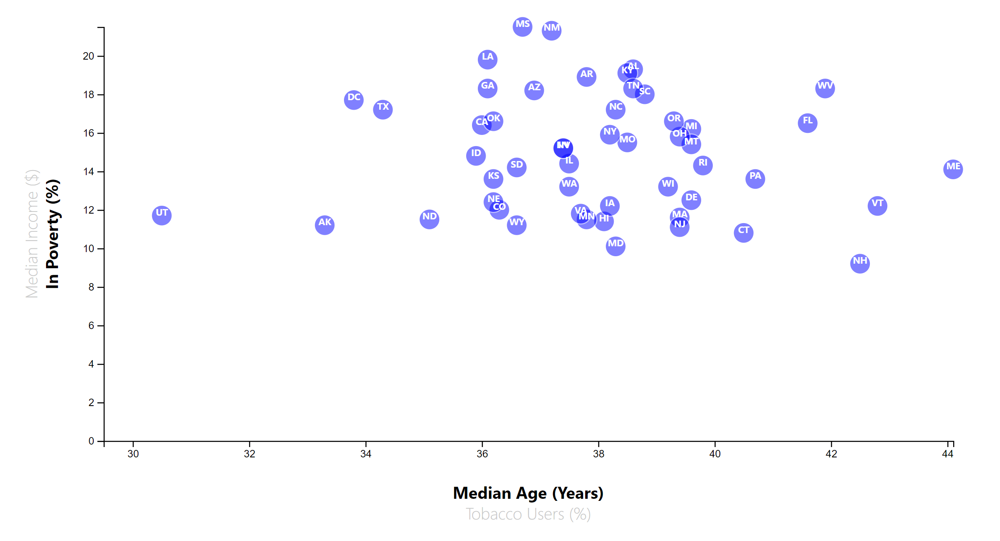

Intro
By the time I made it to the Grand Canyon my first time, it was completely dark. I had flown to Phoenix with a small team in order to capture the as-built conditions of the Arizona State Fairgrounds using a laser scanner and a drone that struggled to perform in the desert heat. By the time we presented our work to the City Council and the architectural preservationsists who hired us, we didn't have a lot of leisure time remaining before our flight back to Portland.
Undeterred, we made the most of the time -- but eventually wound up at one of the great natural wonders of the world with no visible light to aid us in viewing it! So, me being me, I retrieved the laser scanner from the rental car, set it up, and took the highest resolution scan I could, 976,000 laser bursts per second pinging off of the South Rim for the better part of 15 minutes. I couldn't wait to get home and process the data in order to catch my first up-close "glimpse" of the features I couldn't see in real-time. It was at that point, back in 2015 as I was finishing up at the university, that I also gained my first real sense of the value that the collection, processing, and visualization of "big data" can offer.
You can read more about my work here, or view my resume here.❯
Work

I've spent the last half-decade devising and operationalizing workflows with a focus on solving technical problems for clients in various industries. After graduating from college, my main preoccuptation was the processing of billions of rows of LIDAR data in order to produce models for architects and engineers, and subsequently training them and their teams on how to incorporate said models into their own workflows.
Additionally, I've been blessed with the opportunity to help teach UC Berkeley Data Analytics and Visualization Boot Camp students and to mentor two small cohorts of SFSU's Business Analytics grad interns. With that said, my primary engine of growth over the last year has been the repeated exercise of aligning the output of automated processes with stakeholders' priorities (and vice versa). In other words, coding is relatively easy; writing production-quality, unit-tested code that lends itself to operational excellence is quite another.
You can read more about me and my journey here.
✏ View my resume
✉ Contact me
🗓 Book a consultation❯
About

I relocate every two years, or so.
No, I am not in witness protection. My partner is in sales for a multinational, and she gets re-assigned based on business needs, which has required some flexibility. Being a direct service provider and trying to scale is impossible, given such context. So, I had to pivot. After the laser scanning- and 360° photo-based business ventures, I found myself with the opportunity to select an entirely new challenge in which to immerse myself and, after careful consideration, chose to algorithmically trade Forex. Of course, that meant I first had to figure out how to teach myself computer programming, and I've since yet to relent.
The alternative path I was considering was portraiture, as I'd enjoyed some previous success fulfilling art commissions...oh well, c'est la vie.
I do data and web stuff now, which satisfies both my creative and analytical tendencies.
But why?

Nevertheless, the path has been an interesting one.

Projects
Here are some interactive things I've worked on; do note that clicking the images will take you to other pages so you can tinker:
Web

Machine Learning
Data Visualization
 



Contact me to schedule a consultation, as I absolutely love discussing unique business problems and use cases for open source tech! 📅❯
Contact*
* Or directly book a free 15-minute consultation to discuss your business priorities and challenges: 📅
{kind=link}
{kind=link}
{kind=link}
{kind=link}
{kind=link}
{kind=link}